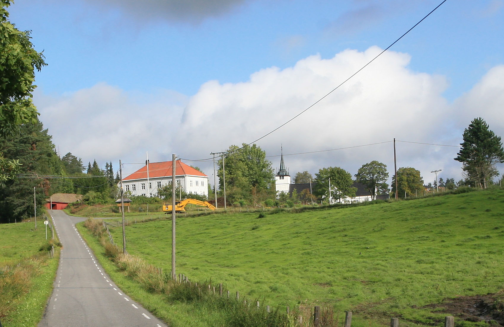
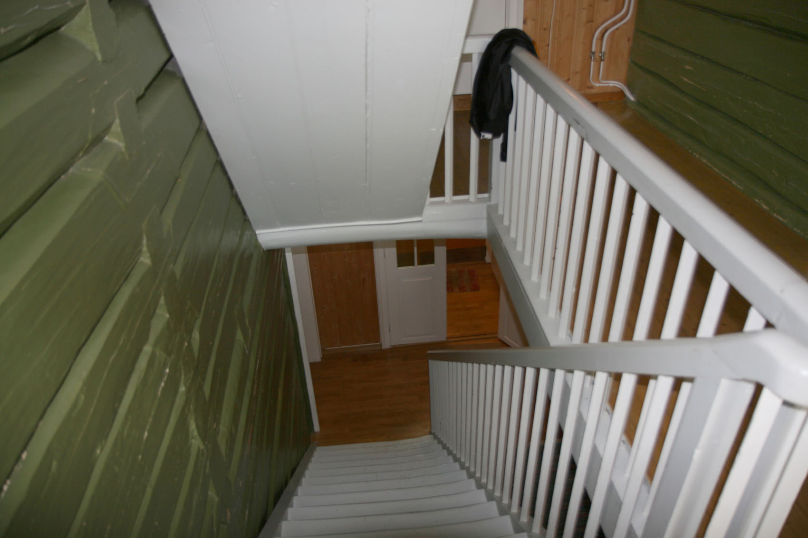
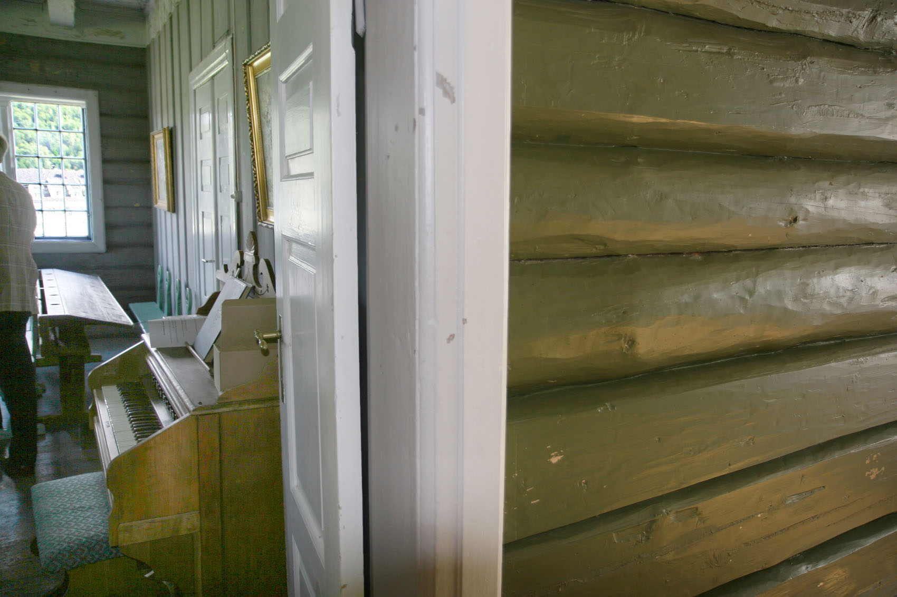
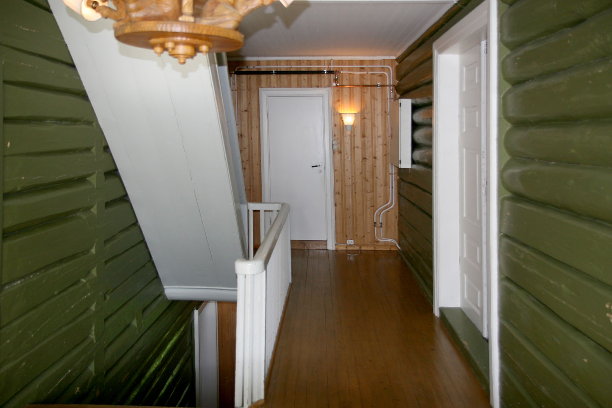
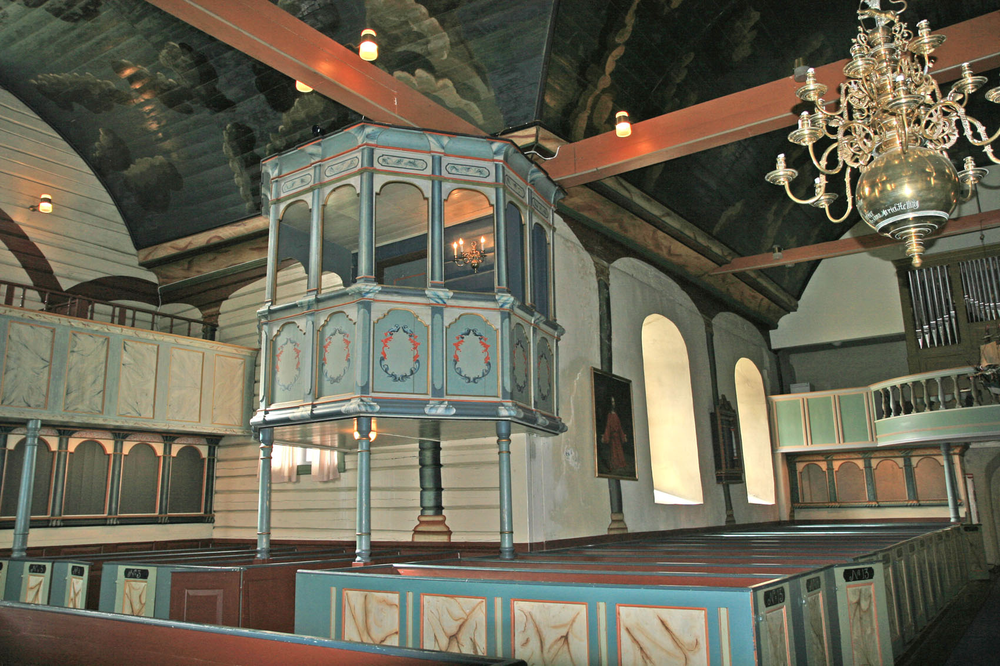
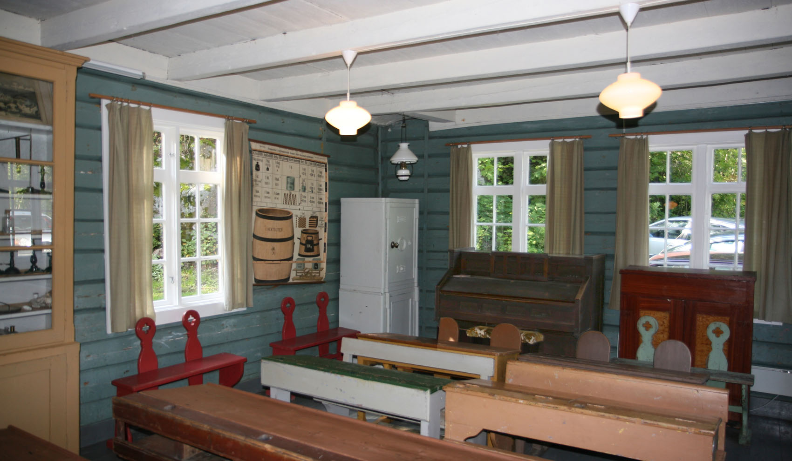
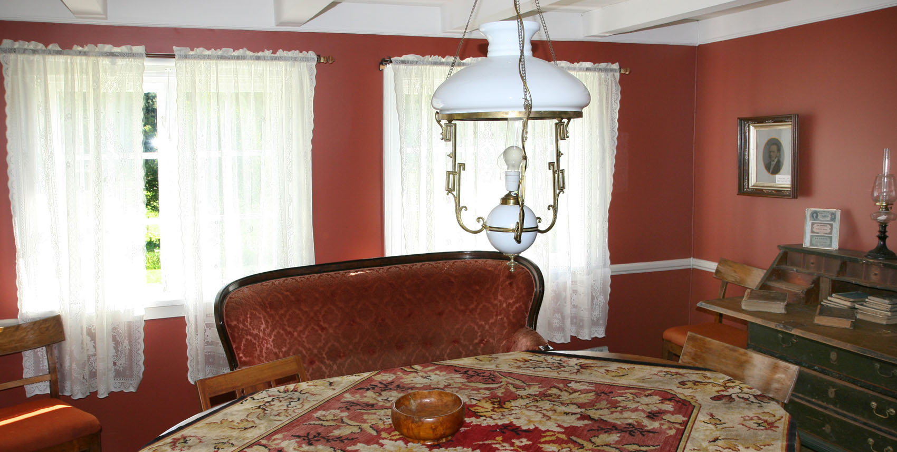

Lærerutdanning i 170 år
Fra Holt Seminar til Universitetet i Agder.
Bilder fra jubileet 2. september 2009
Foto: Torvald Slettebø, Universitetet i Agder, Seniorsenteret
Holt Seminar / UiA feirer 170-årsjubileum
Øyvind Bjorvatns jubileums-invitasjon:
Høvåg Museums- og Historielag ble stiftet for å bevare dette gårds- og sjømannshjemmet. Veien skulle legges om, og huset som hadde vært i samme families eie i generasjoner, kunne bli revet. Da dette ble kjent i bygda, dukket det opp et ønske og en ide om å få bevart huset. Ideen var å danne en forening, og i februar 1957 ble Høvåg Museums- og Historielag stiftet. I dag er huset her på Vesterhus et av museene i Høvåg.
Etter at Stortinget hadde gjort sitt historiske vedtak, kom undervisningen i gang den 2. september 1839. De atten første elevene ble fordelt på to klasser etter en opptaksprøve. Den eldste eleven var holtingen Samuel Halvorsen, som var 42 år gammel og eldre enn seminarbestyreren.
Holt Seminar var et av de statlige stiftsseminarene (toårige lærerskolene) som ble satt i gang i første halvdel av 1800-tallet. Hensikten var å bedre lærerutdanninga, som var svært mangelfull. Nå skulle hvert bispedømme (stift) få sin offentlige lærerskole. ”Vår” skole ble altså lagt til Holt prestegård. Kristiansands stift var stort den gangen, og omfattet i tillegg til de to Agder-fylkene, også Rogaland og de indre bygdene i Telemark.
En kan undre seg over at lærerskolen ble lagt så langt øst i bispedømmet, men det hadde sine praktiske årsaker. For det første var det ledige lokaler på prestegården i Holt, og for det andre var den unge soknepresten, Andreas Faye, alt den gangen kjent som en dyktig pedagog, prest og historiker. Han ville bli en ideell bestyrer. Dessuten la de bestemmende myndigheter i Kristiania (Oslo) vekt på at seminaristen skulle skånes for uheldig påvirkning fra urbane miljøer som i Arendal og Kristiansand. Stortingspolitikerne regna med at de aller fleste av dem ville komme fra landsbygda, der fristelsene ikke var så påtrengende!
I presteboligen på Holt ble det innreda to klasserom i 2. etasje, pluss et lite lærerrom. Det siste var så lite at den yngste læreren måtte stå når alle var til stede samtidig. Dessuten disponerte skolen et sang- og musikkværelse i allmuestua, mellom presteboligen og kirka. Der ble det også holdt elevmøter, og det heter det seinere at så vel Johan Sverdrup som Søren Jaabæk måtte stande til rette. Praksisopplæringa ble lagt til Holt faste skole, litt nord for kirka. Der fikk ”Skolemestrenes Konge”), Andreas M. Feragen, etter hvert ansvaret. I så vel teori som praksis ble det lagt stor vekt på at de vordende lærere skulle forberedes også til å bli klokkere (kirkesangere).
Seminaristene hadde seks dagers skoleuke, og i tillegg skulle de delta i gudstjenesten i kirka om søndagen. Helt fram til 1871 var seminarbestyreren og Holt-presten én og samme person. Elever som ikke kunne bu heime, leide rom på gårdene i nærheten av skolen.
I 1877 ble lærerskolen flytta fra prestegården i Holt til det nedlagte tukthuset i Kristiansand. Da var 445 lærere blitt uteksaminert. De aller fleste kom fra bygdene i bispedømmet, og alle var gutter og menn. Blant de mest kjente var Arne Garborg og Jørgen Løvland, som seinere kom til å spille viktige roller i kulturliv og politikk.
I dag er så vel den ene seminarsalen som øvingsskolen utstyrt omtrent som de var på 1800-tallet. Derfor er det naturlig at 170-årsmarkeringa foregår i Holt. Lærerutdanninga foregår nå i Kristiansand, og er en viktig del av universitetet i Agder. Rektor Torunn Lauvdal vil være til stede ved jubileet på den gamle seminarsalen, og hun vil komme med enhilsen fra UiA.
Det er Historielaget for Dypvåg, Holt og Tvedestrand som står for arrangementet, som vil foregå dels på seminarsalen, dels i Holt kirke og dels på øvingsskolen /Feragen skole), der det blir både omvisning og bevertning. Folk fra så vel universitetet som Aust-Agder fylke og Tvedestrand kommune er invitert. Dessuten representanter for lag og institusjoner. Siden UiAs vogge sto på Holt, vil formannen i historielaget, Harald Langmyr, avduk ei lita vogge med innskriften ”Holt Seminar 1839. UiA”."
- Øyvind Bjorvatn
Andre november 2009 inviterte Øyvind Bjorvatn til jubileumsfering på Holt.

Da var det 170 år siden de første seminaristene inntok sine plasser i prestegårdens undervisningsrom, øvest til høyre i bildet.

De smårutete vinduene fra den gang er pietetsfullt bevart.
Flagget er heist, og en gruppe inviterte venter utenfor -
- og der kommer selveste prost Andreas Faye, seminariebestyreren fra 1839, og ønsker velkommen.
Opp trappa til seminarierommene, samme trappa som seminaristene sleit fra 1839 til 1977.
"Andreas Faye" til venstre, og hans kirke gjennom vinduet til høyre.
Den virkelige Andreas Faye var en relativt ung mann da ha startet Seminariet på Holt -
- mens vi er blitt vant til hans portrett fra eldre år. Henrik Ibsen og Ivar Aasen kjenner vi også avbildet som oldinger.
Øyvind Bjorvatn, tidligere stortingsmann, er en av de kjente menn som har fått sin start som seminarist på det som opprinnelig het Christiansands Stiftsseminar. Her sammen med nåværende universitetsrektor Torunn Lauvdal før omvisning på Holt Skolemuseum.
Vuggen til Universitetet i Agder sto altså på Holt for 170 år siden, og den overrekkes her av "Andreas Faye" til nåværende Universitetsrektor.
Det ble satt overmåte stor pris på at universitetsrektor Lauvdal sammen med en gruppe medarbeidere fra UiA hadde prioritert jubileumsmarkeringen og tatt seg tid til å komme til Holt.
Det største av seminarierommene er forsøkt gjenninnredet så nær det opprinnelige som det gikk an å komme.
Seminarierommet sett fra gangen.
Det minste seminarierommet er for tiden ikke i bruk.
Det går frasagn om hvor lite lærerrommet var, og åpner vi døra rett fram, kan vi selv se.
Nå er det et moderne toalett.

En seminarist sendte hjem denne møbleringsskissen, og ut fra den er møbleringen nå rekonstruert. Øverst til høyre "lærerrommet".
Faye var både prost og seminariebestyrer. Han underviste på seminaret, og var i tillegg flittig skribent og historiker. En betydelig kulturpersonlighet. Kulturelt ruvet den gang de nye seminariene.
Det var litt todenskyer over jubileumsdagen, men været holdt. Det var heller ikke uten torden for 170 år siden. Det var strid om hvor utdanningssenteret skulle ligge.
Kirke og lærerutdanning gikk hånd i hånd, og ikke bare i geografisk nærhet.
Et bilde fra seminariets første tid, med små vinduer, som altså er beholdt helt til i dag i undervisningsrommet øverst til venstre. Men vi ser allerede begynnende modernisering med store vinduer for en ny tid.

Et par kulturtrekk fra skolemiljøet.
Her hadde hadde seminaristene et trekkfullt møtelokale for elevsamfunnet, og her debatterte Arne Garborg, Rasmus Løvland, og andre senere kjente menn.
Så langt det har vært mulig har historielaget forsøkt å skaffe riktige møbler tilbake fil rommet. Møbleringen er i hvert fall av riktig type, og oppstillingen følger den gamle skissen.
Det er et gammelt kirkested, kanskje et sentrum helt tilbake til hedensk tid.
Holt kirke er et av Norges rikest dekorerte kirkebygg. - For utførligere tekst og flere bilder, viser vi til Holt kirke
Før vi forlater seminaremiljøet, gjentar vi at seminarister den gang ofte senere ble kjente kulturpersonligheter. Det var ikke så mange utdanningsmuligheter for begavet landsungdom, og seminariene skummet fløten. Her viser vi en bok om "Bokmålets far" Knud Knudsen, som var elev her, og som har sin byste på kirkegården.
Han var også kirkesanger, en ganske vanlig kombinasjon den gang skolen var nærmere knyttet til kirken enn i dag.
En av de mest kjente norske skolefolk gjennom tidene var Andreas Feragen, mangeårig leder for øvingsopplæringen ved Holt Seminar.
Feragen gjorde gjennom årene en formidabel innsats for øvingsskolen, som nå bærer hans navn, men som også er skolemuseum. Den var nok ikke i utgangspunktet så rikt utstyrt som her, snarere nesten snau. Feragen måtte presse på for å så selv blekkhusene.
Feragen selv i midten, med medalje. Han var avholdt og anerkjent.
Feragen hadde også sin bolig i skolebygningen. Da han døde, ble bygningen dessverre tømt, på auksjon. Senere er det gjort store anstrengelser for å fa tilbake tidsriktig utstyr, og helts samme gjenstander.

Både pult og skriveoppsats skal ha tilhørt Feragen.
Det fantes lite bøker i hjemmene, kanskje bibel og huspostill. Også her gjorde Feragen en stor innsats ved å skaffe bøker til utlån.
Øyvind Bjorvatn til høyre, og hans kone helt til venstre, de to krumtappene i festlighetene. Men ellers var det invitert viktige politikere og kulturpersonligheter. Rektor Lauvdal midt i bildet.
Etter program i seminarierommet og i kirken, vandret felstdeltakerne noen hundre meter til Feragen skole, hvor det ble servert grønnsaksuppe, kaffe og kringle. Flott arrangert!
Det var en historisk minnesamling, men Thor Einar Hanisch, leder for Seniorsenteret ved Universitetet, markerte at de gamle fremdeles er særdeles aktive ved UiA.
Fru Marit Bjorvatn gir en orientering før hun leder en interessant omvisning i museumslokalene.
Kristiansand lærerskole gjennom 100 år
Utdrag fra rektor Olaf Jansens tekst
"I de årene seminaret var i Holt dimitterte det i alt 445 elever, fordelt på 38 kull. Men skolen har hatt atskillig flere elever. Det var nokså mange, især i de første årene, som var med i undervisningen i kortere eller lengre tid uten å ta eksamen. For det meste var dette folk som hadde lærerpost, eller som kunne få post når de hadde «hospitert» en tid ved seminaret. I første femårsberetning, til og med 1844, sier Faye at foruten de 31 som i disse årene tok avgangseksamen, hadde 20 unge menn hospitert i i å 2 år, «de fleste nu ansatte som Omgangsskoleholdere». En anonym innsender har i «Morgenbladet» klandret at almuen på denne måten skaffer seg gratis undervisning. Faye mener at dette er ubeføyet kritikk, og hans kolleger «har offentlig taget til Gjenmæle mod Artikelen».
Elevene har i de første årene svært forskjellige, men i det hele små, forkunnskaper. Dette volder en del vanskeligheter og gjør at en ikke rekker så langt som en kunne ønske; men ellers har Faye bare lovord om elevenes flid og framferd. Senere møtte aspirantene tydeligvis mye bedre rustet, da de dels hadde gjennomgått «mindre Skolelærer -seminarier» (sikter formentlig til «lærerskoler», nevnt i skoleloven av 1860 § 60), dels modtaget Undervisning ved høiere Almueskoler». Før er nevnt (s. 38) at elevene etter reglementet var pliktige til alltid å være til stede ved gudstjenesten i kirken. Dette ser også ut til å være gjennomført ved Holt, iallfall i Fayes tid. Men Faye har gått et skritt videre.
I årsberetningen for 1845 skriver han: «Da der hver Søndag holdes Gudstjeneste i Holt Kirke, har Eleverne riig Anledning til at besøge Guds Huus og der efter Reglementet øve sig i Kirkesang. Lærlingerne holdes ikke alene til flittig at besøge Guds Huus, men maa hjemme nedtegne Hovedindholdet af den hørte Prædiken, der indføres i dertil indrettede Bøger, som derpaa leveres iste Lærer til Eftersyn og tjener som Beviis paa Opmærksomhed og Huus-flid.» — At noe i den retning virkelig er gjort, derpå tyder også en «Dagbok» som en elev har ført i 1850 og 51:
«18. August 1850. Hr. Presten Faye talede om det store Gode at være i Besiddelse af sunde Sandser, samt om Tun-gens rigtige Brug, samt katekiserede over det 3. Bud.
22. September. Idag prædikede Hr. Seminarlærer Døder-lein. Indholdet af Prædiken var: «Den kristelige Ydmyghed» — deretter kommer et ganske utførlig referat.
10. November. (Jesus opvækker Jairus's Datter). Faye talede om at Døden ogsaa er en trofast Ven. Døden advarer os mod at betræde den Bane, som fører til Sorgernes Hjem, og opmuntrede os til at vandre paa den Vei, som fører til de fuldkomne Glæders Land; den trøster, naar alt her i Verden synes at være tungt og besværligt. Såa er vor Trøst at Døden engang skal gjøre Ende paa vor Jammer.
24. November. Med Seminarbestyrerens Lov var jeg paa Grund af det slemme Føre ikke i Kirke idag» (Dagboken har notater for hver søndag).
Fra og med 1859 til og med 1869 får elevene en tallkarakter også for «Evner». Jeg kan ikke se at det har kommet noe påbud om det, og det er mye mulig at det bare ble brukt ved Holt. Reglementet hadde ingen forskrift om formen for avgangsvitnesbyrdet. Vanlig evnekarakter var 2—4. Fem elever fikk i de 11 årene i for evner. Det var: Gabriel Fedde.
Kvinesdal (1864), Th. Stousland, Søgne (64), /. G. Løvland, Evje (65), P. Leire, Søgne (69) og T. Mauland, Time (69). Gabriel Fedde var lærer en tid, reiste til Amerika og ble stor forretningsmann i New York, Th. Stousland er den senere stortingsmann og statsrevisor. Løvland gikk bare ett år på seminaret og tok eksamen i 17—i8-års alder. P. Leire, lærer i Kristiansand, var kjent for å ha usedvanlige matematiske evner, Mauland er mest kjent som bygdehistoriker og folkeminnesamler.
Det ser ut til at i alle de årene seminaret var i Holt, kunne elevene få lærerstilling straks de var ferdige, og at ikke på langt nær alle almueskoler fikk eller kunne få lærere med utdanning fra et seminar. Prost Debes i Øyestad spurte (1844) Faye om det var mulig å få en seminarutdannet mann til å søke lærerpost i Froland (den tid anneks til Øyestad). Men Faye må svare at det vil ingen av seminarets lærlinger, «da de alle vente en mere convenerende Ansættelse. Hvis De derfor ønsker en Seminarist, bliver De vel nødt til at sende os et Par duelige Subjecter til Bearbeidelse».
Mange av elevene har hatt det økonomisk trangt, og det er i flere tilfelle grunnen til at de ikke gjennomgår hele kurset. De kan ikke skaffe de pengene som skal til, enda utgiftene til kost og losji, omkring 45 spd. for skoleåret, som det oppgis at de har vært den første tiden, jo synes svært rimelige. Fra 1850 og utover ser det forresten ut til at forholdene i så måte er blitt bedre, det kom en økonomisk oppgangstid da. Men samtidig går søkningen til seminaret ned. «Aarsagen til at såa faae Lærlinger have meldt sig,» skriver Faye i 1854, «maa nok hovedsagelig søges i Næringsveienes Flor i det foregaaende Aar, der alle gave et riigere praktisk teologisk seminar, som departementet akter å sette fram for Stortinget neste år. En kan se at Faye har interessert seg også for denne siste sak, og det er etter hans forslag at pedagogikk blir opptatt som fag ved seminaret. Loven blir vedtatt og sanksjonert i 1848."